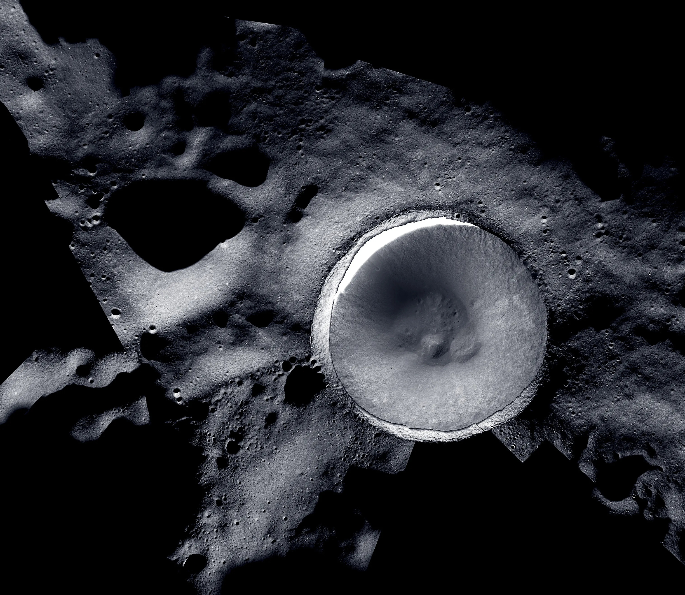
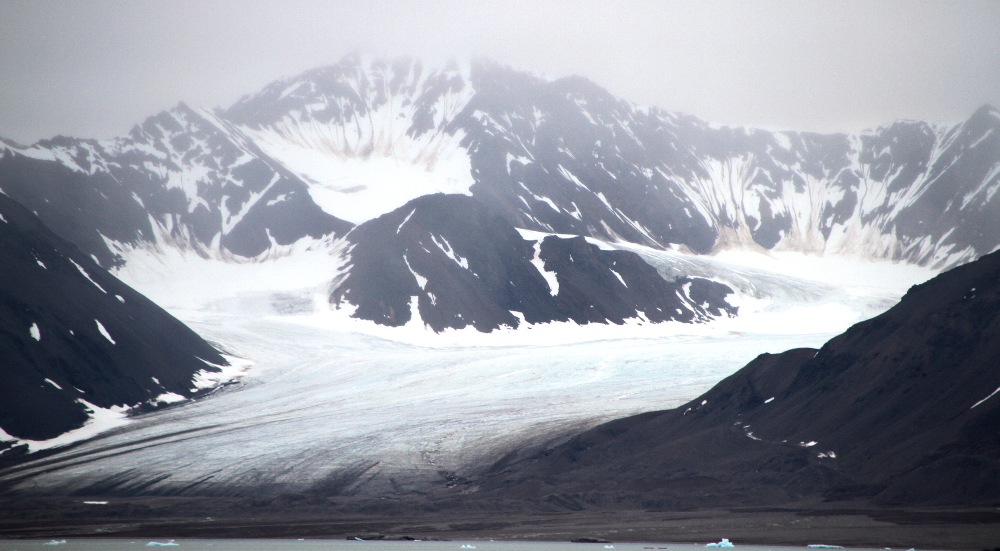
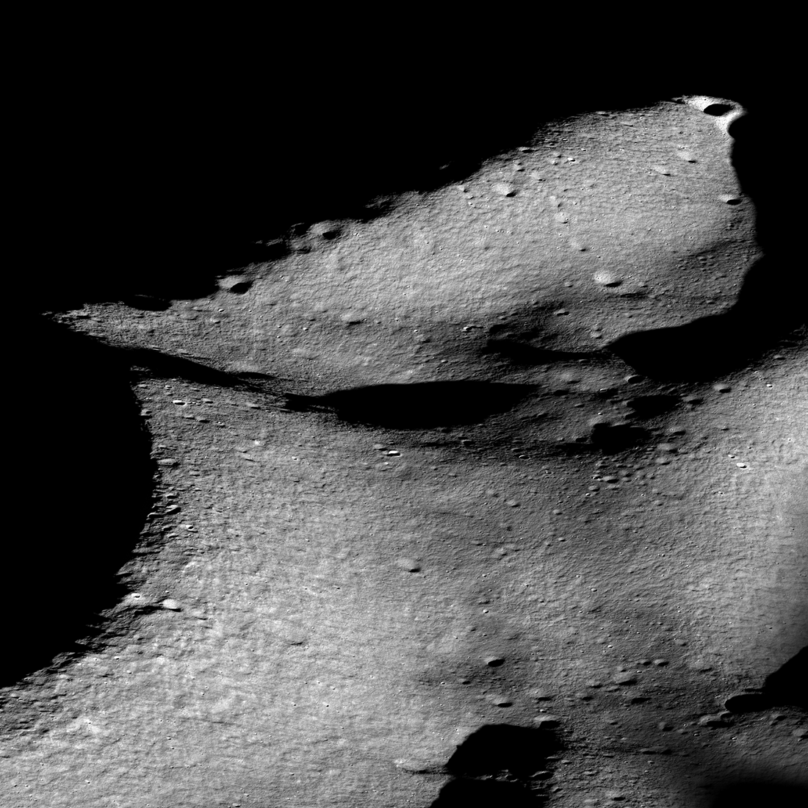
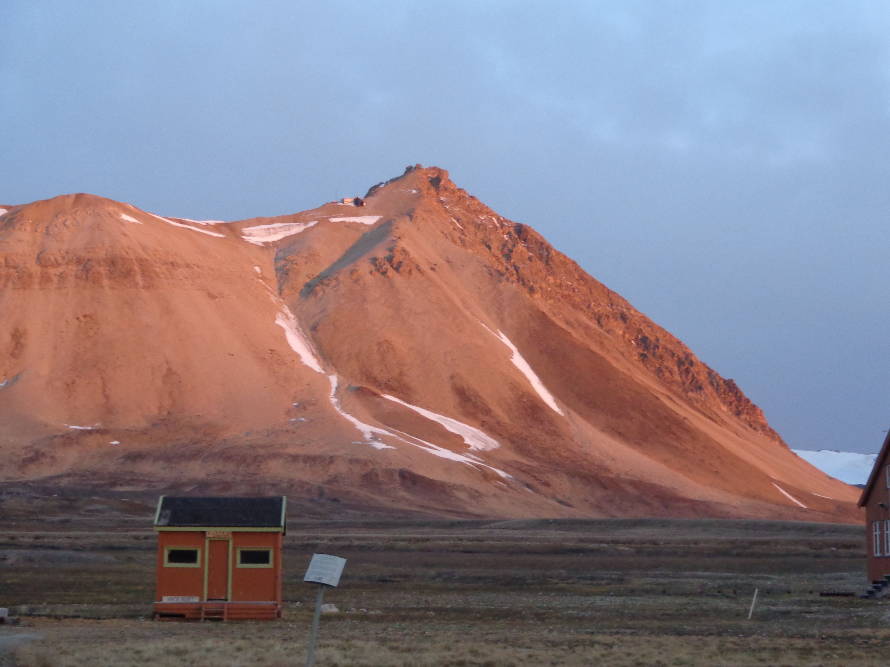

Shackleton & Svalbard
The rim of Shackleton crater, at the Moon's south pole, compared against the Midtre Lovénbreen glacier near Ny-Ålesund — across terrain, light, and ice — to find where on Earth to test what a permanent lunar base will need.
The score, by dimension
A 0–1 index per dimension, weighted by how critical it is for a permanent lunar base.
1.00
weight 40%
The lunar range (5–10% by weight) is an upper bound, not a confirmed deposit — Mini-RF radar couldn't rule out zero. Svalbard's ice is solid and massive; Shackleton's would be trace-level, mixed in regolith.
0.72
weight 30%
The glacier floor is gentle (~5°), but its lateral moraines and the slopes of nearby Zeppelinfjellet run 25–30° — close to Shackleton's walls. Mobility tests belong there, not on the flat ice.
0.31
weight 30%
115 days of polar night (Oct–Feb) over 365 days of permanent shadow on the Moon. The analogy holds for that window only.
Compared profile
Same distance/elevation axis: Shackleton's bowl (true permanent shadow) against the much gentler glacier valley profile (seasonal polar night, not eternal shadow).
Both sites, in frame
The abstraction above, grounded in actual imagery of each place.

Shackleton crater, lunar south pole
LROC & ShadowCam mosaic — NASA / KARI / ASU

Midtre Lovénbreen, Kongsfjorden
Photo: Bjoertvedt — CC BY-SA 3.0, Wikimedia Commons
Terrain, in frame
Where the mobility tests actually belong: the ridge, not the flat ice.

Shackleton–de Gerlache ridge
LROC perspective view — NASA / GSFC / ASU (public domain)

Zeppelinfjellet, Ny-Ålesund
Photo: Superchilum — CC BY-SA 3.0, Wikimedia Commons
What it could look like
A suit tested on Svalbard's slopes today. A sunlit habitat on Shackleton's rim, someday.
Where it holds, where it breaks
Terrain
Both demand crossing irregular ground where ice acts as cement between sediments — key for testing rovers and drilling equipment.
Shackleton is an impact basin with 30° walls; the glacier floor itself is much gentler (~5°). The closer match sits at its moraines and the Zeppelinfjellet slopes nearby (25–30°).
Illumination and shadow
Forces teams to operate with prolonged artificial light, sharp temperature drops, and power management without sun for 100+ straight days.
Shackleton's interior has sat at −200°C in total darkness for billions of years; Svalbard has a seasonal cycle that brings back full daylight in summer.
Water ice
The lunar regolith's theoretical ice content (5–10% by weight) matches the driest bands of Bayelva's permafrost.
Lunar ice is mixed with abrasive dust in a cryogenic vacuum; Svalbard's permafrost interacts with summer liquid water and a dense atmosphere.
Svalbard isn't a geological clone of Shackleton — it's a place to catch engineering problems early, before simulating cryogenic vacuum and extreme slopes.
This isn't a new idea: NASA and ESA ran the Arctic Mars Analog Svalbard Expedition (AMASE) from 2003–2011, testing the SAM and CheMin instruments that later flew on the Curiosity rover. The Haughton-Mars Project (NASA/SETI Institute, Devon Island) used the same logic for suit and rover logistics in polar isolation.
Sources
- Shackleton dimensions and slope — Wikipedia, Shackleton (crater), LRO/Clementine studies.
- Shackleton water ice — Thomson et al. 2012, An upper limit for ice in Shackleton crater as revealed by LRO Mini-RF orbital radar, Geophysical Research Letters.
- Ny-Ålesund light cycle — Wikipedia, Climate of Svalbard.
- Midtre Lovénbreen glacier — SwissEduc Glaciers Online.
- Bayelva / Kvadehuken permafrost — SESS Report 2020, Ny-Ålesund Integrated CryoNet Cluster (Global Cryosphere Watch).
- Precedent — Arctic Mars Analog Svalbard Expedition (AMASE), NASA/ESA, 2003–2011.
- Precedent — Haughton-Mars Project, NASA/SETI Institute, Devon Island.